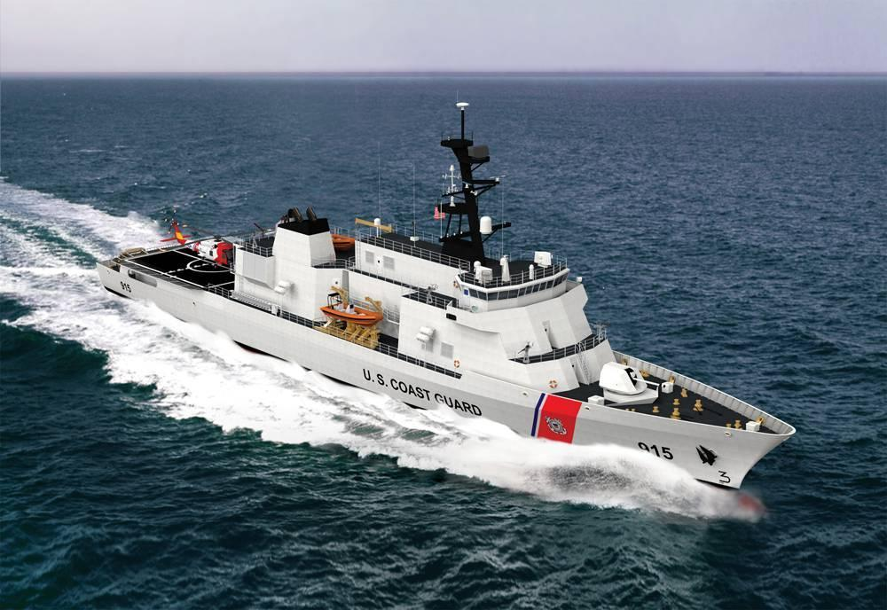
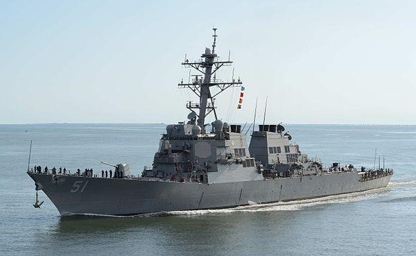
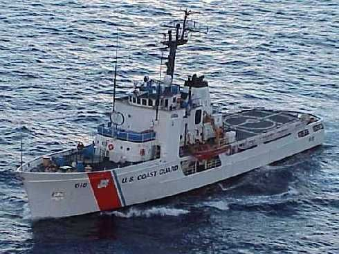

Source: U.S. Dept. of State Bureau of International Narcotics and Law Enforcement Affairs
Three ships are available to be deployed in the East Pacific as part of the operation, with each positioned in different places to maximize their combined effectiveness. Your job in this task is to choose the single best ship and pick where to station the ship to patrol for drug smugglers.
US Coast Guard Cutter Diligence
USCGC Diligence includes a HITRON deployed on it, and with Costa Rican coast guard members also on board (note: the HITRON is used only for interception of already detected vessels)
US Navy destroyer McKernan
USS McKernan with US Coast Guard drug interdiction team on board, operating with support of a P-3 Long Range Tracker aircraft
US Coast Guard cutter Martell
USCGC Martell including a contingent of Guatemalan coast guard members on board
